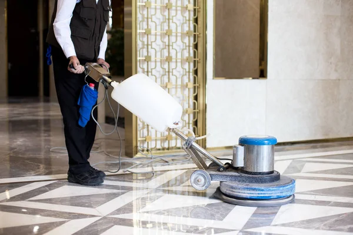
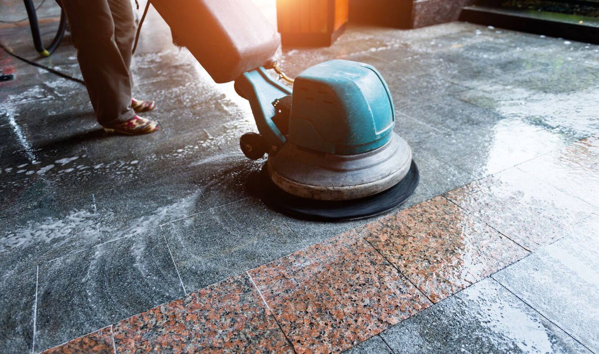
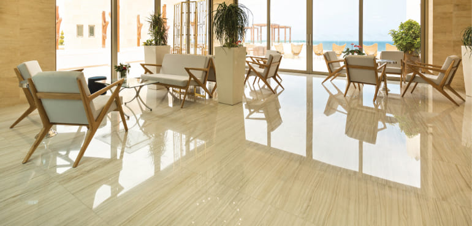
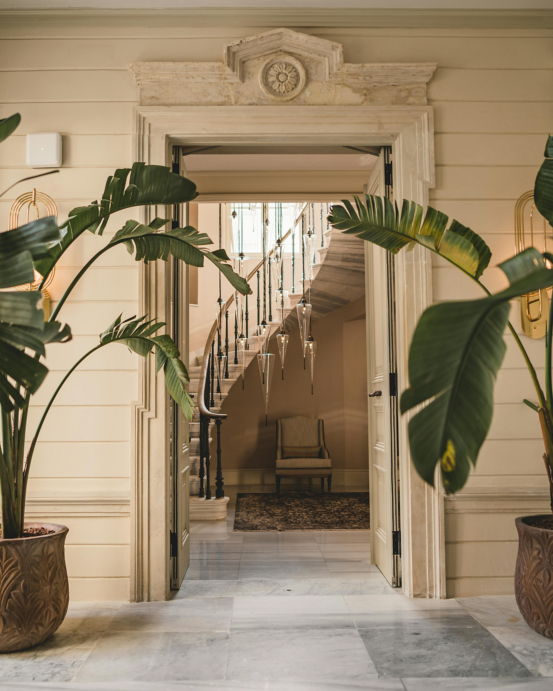

Español
Pulido y abrillantado de mármol en Marbella
Especialistas en pulido, abrillantado y cristalizado de suelos de mármol y granito
en Marbella, Fuengirola y toda la Costa del Sol. Trabajamos en viviendas, comunidades,
hoteles, restaurantes y locales comerciales.
Servicios principales (SEO)
mármol · Marbella
1) pulido de mármol Marbella
Pulido profesional de suelos de mármol en viviendas y comunidades de Marbella. Eliminamos
arañazos, manchas y desgaste para recuperar el brillo original del mármol.

abrillantado
2) pulido y abrillantado de suelos Marbella
Servicio completo de pulido y abrillantado de suelos de piedra natural.
Ideal para comunidades, portales, garajes y locales comerciales en Marbella.
Fuengirola
3) empresa pulido mármol Fuengirola
Empresa especializada en pulido de mármol en Fuengirola y alrededores. Ofrecemos visitas
y presupuestos sin compromiso en toda la zona.

Costa del Sol
4) pulir mármol Costa del Sol
Pulimos y restauramos suelos de mármol en toda la Costa del Sol: Marbella, Fuengirola,
Estepona, Benalmádena y alrededores.

granito
5) abrillantado de granito Marbella
Tratamientos específicos para suelos de granito: limpieza profunda, pulido y abrillantado
duradero, con acabado antideslizante si es necesario.

suelos de mármol
6) pulido de suelos de mármol en Marbella
Pulido de grandes superficies de mármol en hoteles, spas, tiendas y comunidades de vecinos.
Trabajamos fuera del horario comercial si lo necesita.

restauración
7) restauración de mármol y granito Fuengirola
Recuperamos suelos antiguos de mármol y granito: nivelado, pulido, sellado de juntas y
cristalizado final para un brillo espejo.

cerca de ti
8) pulidores de mármol cerca de Marbella
Equipo local de pulidores de mármol cerca de Marbella. Respuesta rápida,
servicio serio y resultados profesionales.

cristalizado
9) cristalizado de mármol Marbella precios
Cristalizado de mármol en Marbella con precios claros por metro cuadrado. Le asesoramos
sobre el mejor tratamiento para su tipo de suelo.

empresa suelos
10) empresa de pulido de suelos Costa del Sol
Empresa de pulido de suelos en toda la Costa del Sol. Trabajamos con
comunidades de propietarios, administradores de fincas y empresas de limpieza.

English
Marble & stone floor polishing in Marbella
Professional marble and granite floor polishing, shining and crystallizing
in Marbella, Fuengirola and the whole Costa del Sol. We work in private homes, communities,
hotels, restaurants and commercial premises.
Main services
marble · Marbella
Marble floor polishing – Marbella
Deep polishing of marble floors in apartments and villas in Marbella. We remove scratches,
stains and wear and bring back the original shine of your marble.
shine & gloss
Polishing & shining of stone floors
Complete polishing and shining service for marble and natural stone floors.
Perfect for communities, entrances, garages and shops.
Fuengirola
Marble polishing company – Fuengirola
Local company focused on marble polishing in Fuengirola and nearby areas. Free, no-obligation
quotes on site.
Costa del Sol
Marble polishing – Costa del Sol
Marble floor polishing and restoration along the Costa del Sol: Marbella, Fuengirola,
Estepona, Benalmádena and more.
granite floors
Granite floor shining – Marbella
Special treatments for granite floors: deep cleaning, polishing and long-lasting shine,
with optional anti-slip finish.
commercial
Marble floor polishing for large areas
Polishing of large marble surfaces in hotels, spas, shops and residential buildings. We can
work outside business hours when needed.
restoration
Marble & granite restoration – Fuengirola
Full restoration of old marble and granite floors: levelling, polishing, joint repair and
final crystallization for a mirror-like finish.
near Marbella
Marble polishers near Marbella
Local team of marble polishers near Marbella. Fast response, reliable
service and professional results.
prices
Marble crystallization – Marbella prices
Marble crystallization in Marbella with clear prices per square metre. We advise you on
the best treatment for your floor.
floor company
Floor polishing company – Costa del Sol
Professional floor polishing company covering the Costa del Sol. We work
with communities, property managers and cleaning companies.
Galería · Últimos trabajos
Pulido de suelo de mármol en salón de vivienda de lujo en Marbella.
Restauración completa de suelo de granito en portal de comunidad.
Cristalizado de mármol con acabado espejo en hotel de la Costa del Sol.